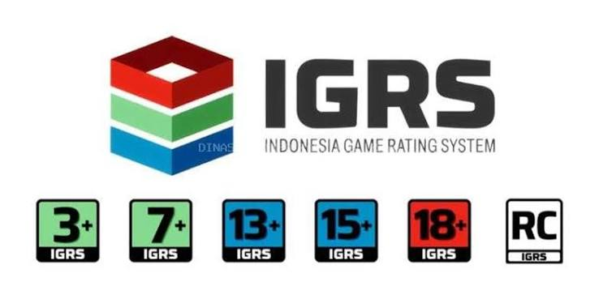

Website HijammTrying to be better. |
|
| Beranda | Profil | Kegiatan | Kontak | |
Perkembangan Industri Game Online di IndonesiaRegulasi baru perlindungan anak, dominasi game mobile, serta peningkatan kualitas pengembang lokal. Anda dapat melihat jadwal rilis game global terkini melalui daftar Game Baru September 2026 dan memantau Tren Game Saat Ini 2026 untuk melihat arah industri secara keseluruhan. Regulasi dan Kebijakan Pemerintah
Pemerintah menerapkan Indonesia Game Rating System (IGRS) yang mewajibkan seluruh penerbit game mencantumkan label klasifikasi usia (3+, 7+, 13+, hingga 18+) untuk melindungi anak dari konten tidak layak. 
Berdasarkan Permenkomdigi, terdapat pengetatan akses platform digital berisiko tinggi dan game tertentu seperti Roblox untuk anak di bawah usia 16 tahun guna mencegah kecanduan serta dampak negatif dunia maya. |
|
|
website pelajar © 2026 Muhammad Hizam |
|